Biomas y zonas
El mundo crece en anillos desde el punto de aparición hasta el borde, a unos 64 km. Los biomas base aparecen en todas partes; cada zona añade los suyos, con su fauna, sus minerales y su mazmorra.

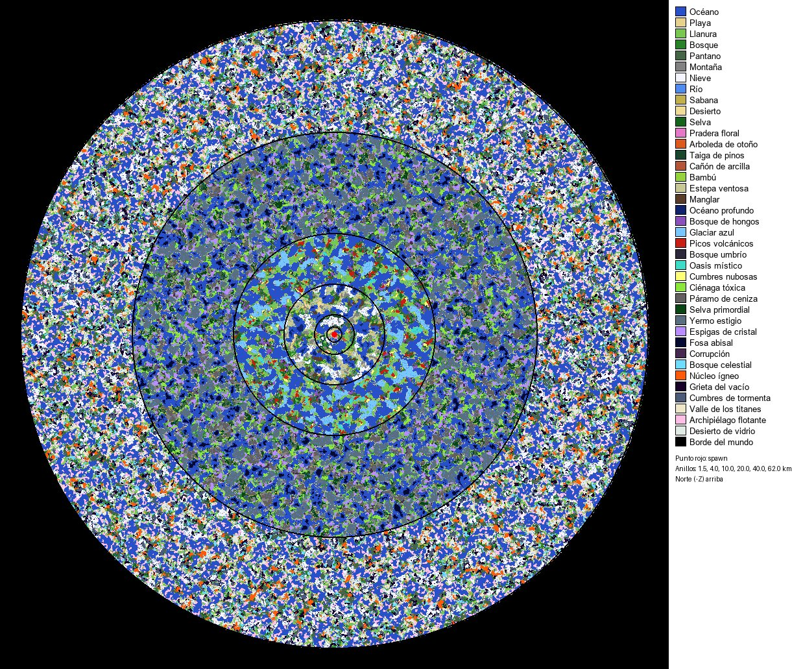
Bandas de peligro
| Banda | Distancia | Nivel de las criaturas |
|---|---|---|
| La Cuna | 0 – 0,6 km | 1 – 3 |
| Tierras del hogar | 0,6 – 1,5 km | 3 – 12 |
| La Frontera | 1,5 – 4 km | 12 – 45 |
| Tierras salvajes | 4 – 10 km | 45 – 110 |
| Tierras lejanas | 10 – 20 km | 110 – 220 |
| Tierras remotas | 20 – 40 km | 220 – 380 |
| El Confín | 40 – 64 km | 380 – 500 |
Biomas base (aparecen en todo el mundo)
Océano peligro +5 %
Fauna (8): 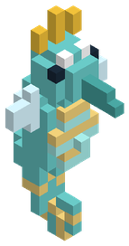 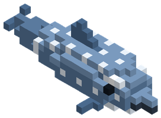 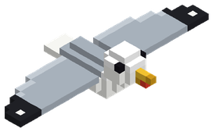 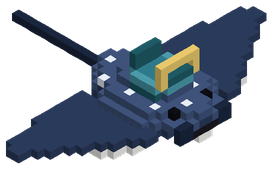 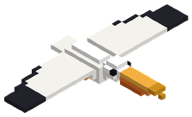 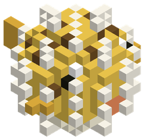 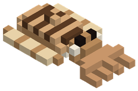 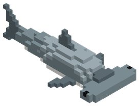
Únicos:  Ondina del Naufragio
Ondina del Naufragio
Minerales: Lapislázuli, Calcopirita, Mármol, Obsidiana volcánica, Magnetita negra, Perla abisal, Amatista resonante, Escarcha estigia, Perla del leviatán
Pesca: Pez Payaso Tropical, Cirujano Azul Real, Cirujano Amarillo, Pez Ángel de Coral
Mazmorras: La Dama Ahogada, El Templo Sumergido de Coral y Mármol
Playa
Fauna (8): 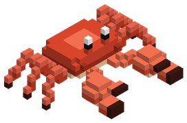 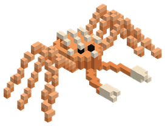 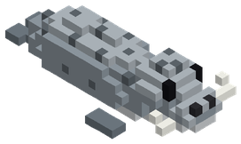 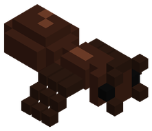 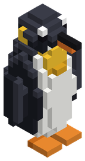 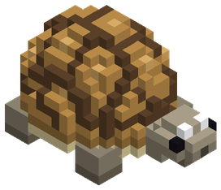
Únicos:  Karkinos el Acorazado
Karkinos el Acorazado
Minerales: Salitre, Sílex, Yeso
Pesca: Lubina Rayada de Playa, Cangrejo Azul Costero
Plantas silvestres: Limonero de la Costa
Mazmorras: La Dama Ahogada, La Gruta de los Naufragios Hundidos
Estructuras: Poste de camino, Pozo, Puesto de mercado, Cabaña de pescador
Llanura
Fauna (16): 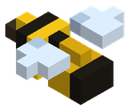 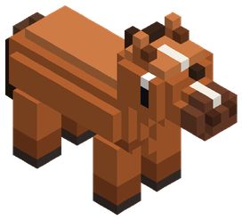 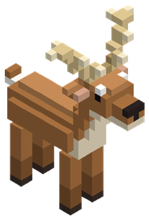 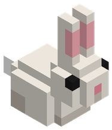 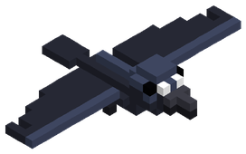 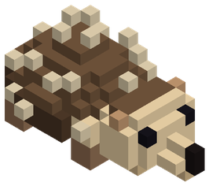 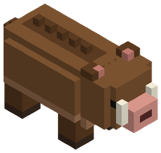 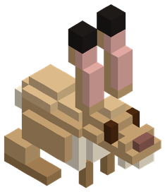 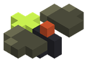 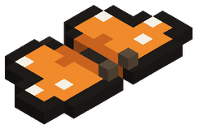 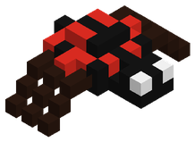 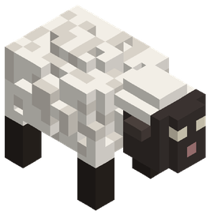 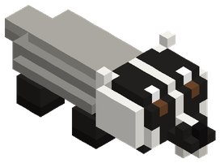 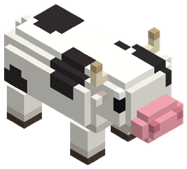 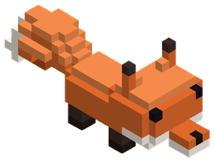
Únicos:  Cerdaloth el Glotón
Cerdaloth el Glotón
Minerales: Mena de cobre, Sílex, Mena de titanio, Bauxita, Topacio solar, Marfil de titán, Cronolita, Astralita
Pesca: Carpa Dorada
Plantas silvestres: Trigo Dorado del Valle, Patata Rojiza de Colina, Cebolla Morada de Huerto
Mazmorras: Las Catacumbas del Roble Caído, La Antigua Cantera de los Canteros, La Gruta de los Naufragios Hundidos, La Cripta de la Ciénaga Olvidada, El Laberinto Resonante de Amatista
Estructuras: Torre de vigía de los Exploradores, Puesto de los Exploradores, Poste de camino, Campamento de bandidos, Atalaya de bandidos, Casa pequeña de llanura, Casa grande de llanura, Huerto, Pozo, Puesto de mercado, Ruina pequeña, Círculo de piedras
Bosque peligro +5 %
Fauna (23): Abeja 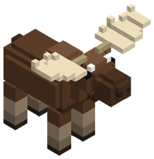 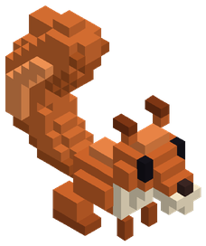 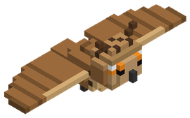 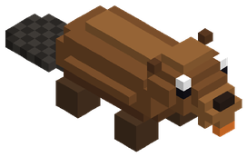 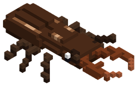 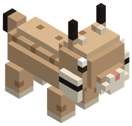 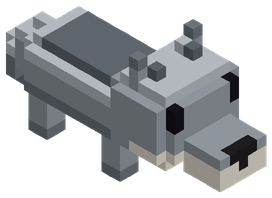 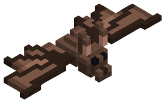 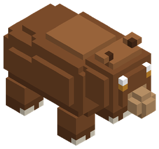 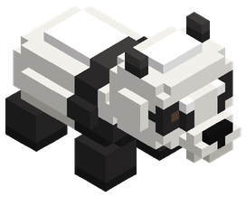 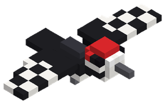
Únicos:  Silvano Sombrío
Silvano Sombrío
Minerales: Mena de cobre, Mena de estaño, Ámbar fosilizado, Jade imperial, Bauxita, Mena de mithril, Zafiro glacial, Esporita fosfórica, Obsidiana del ocaso, Aerolita, Oricalco dorado, Cristal de sombra, Eterio cósmico, Gravitón puro, Astralita
Pesca: Perca de Sauce
Plantas silvestres: Zanahoria Silvestre, Manzanas Rojas del Bosque
Mazmorras: Las Catacumbas del Roble Caído, La Antigua Cantera de los Canteros, Minas Olvidadas de Hematita, El Ziggurat Sagrado de la Serpiente, La Bastilla de las Sombras del Ocaso
Estructuras: Torre de vigía de los Exploradores, Poste de camino, Pozo, Ruina pequeña, Círculo de piedras
Pantano peligro +10 %
Fauna (19): Alce 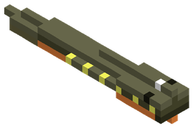 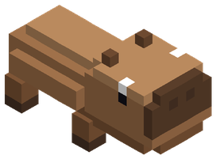 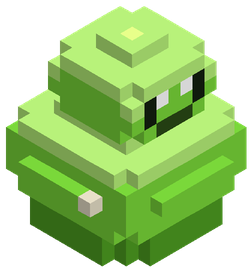 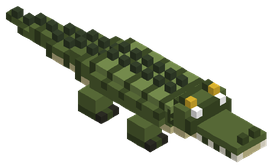 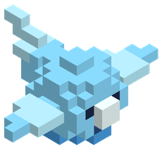 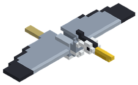 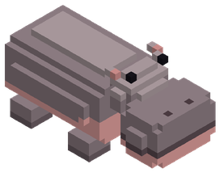 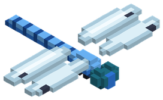 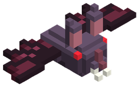
Únicos:  Bégimo de la Podredumbre
Bégimo de la Podredumbre
Minerales: Mena de plomo, Azufre, Lapislázuli, Obsidiana volcánica, Esmeralda, Perla abisal, Zafiro glacial, Esporita fosfórica, Obsidiana del ocaso, Adamantio carmesí, Vitriolo verde, Sangre de hierro, Materia del vacío, Obsidiana del vacío
Pesca: Siluro del Fango, Anguila de Azufre
Plantas silvestres: Arroz Fluvial
Mazmorras: La Gruta de los Naufragios Hundidos, La Cripta de la Ciénaga Olvidada, La Bastilla de las Sombras del Ocaso
Estructuras: Poste de camino, Choza de hombres lagarto, Pozo
Montaña peligro +10 %
Fauna (13): Cabra de Cuernos Espirales Cabra montesa Cóndor de las Alturas Huargo de Batalla Leopardo de las nieves Lince Lobo Marmota Murciélago Oso Oveja Yak Águila real
Únicos:  Gólem de Hematita
Gólem de Hematita
Minerales: Mena de hierro, Mena de plata, Hematita, Rubí de fuego, Corazón de basalto, Hielo azul eterno, Electro natural, Aerolita, Cristal espejismo, Adamantio carmesí, Amatista resonante, Sulfurita negra, Eterio cósmico, Magma primigenio, Fulgurita celeste, Obsidiana del vacío, Tormentita
Pesca: Salmón Plateado de Altura
Plantas silvestres: Patata Rojiza de Colina
Mazmorras: Minas Olvidadas de Hematita, Las Galerías Profundas de la Vena Roja, El Calabozo Glacial del Permafrost, La Forja Primordial de Basalto
Estructuras: Poste de camino, Cueva del ogro, Pozo, Ruina pequeña
Tierras nevadas peligro +10 %
Fauna (17): Alce Alce Corniplata Buey almizclero Búho real Camello de Doble Joroba Nevado Conejo Leopardo de las nieves Liebre Lince Lobo  Mamut lanudo Oso Pingüino emperador Reno Yak Zorro Águila real
Mamut lanudo Oso Pingüino emperador Reno Yak Zorro Águila real
Únicos:  Ursoblasto
Ursoblasto  Wendigo de las Ventiscas
Wendigo de las Ventiscas
Minerales: Mena de plata, Mena de plomo, Mármol, Mena de titanio, Hielo fósil, Magnetita negra, Mena de mithril, Zafiro glacial, Hielo azul eterno, Cristal de sombra, Escarcha estigia, Platino puro, Materia del vacío
Pesca: Bacalao Glacial Milenario
Plantas silvestres: Bayas Azules del Glaciar
Mazmorras: Minas Olvidadas de Hematita, El Calabozo Glacial del Permafrost
Estructuras: Poste de camino, Pozo, Puesto de mercado, Cabaña de las nieves
Río
Fauna (12): Anguila Eléctrica Titánica Capibara Castor Cocodrilo Garza real Gaviota Hipopótamo Libélula Luciérnaga Nutria Gigante de Río Rana Salamandra Gigante de Cueva
Únicos:  Quelonia del Fango
Quelonia del Fango
Minerales: Mena de estaño, Arcilla roja, Cuarzo lechoso
Pesca: Trucha de Arroyo, Carpa Dorada
Plantas silvestres: Remolacha Dulce, Arroz Fluvial
Mazmorras: La Dama Ahogada, La Gruta de los Naufragios Hundidos
Sabana peligro +5 %
Fauna (21): Abeja Avestruz Buitre leonado Cebra Cuervo Dingo Salvaje de las Dunas Elefante Gacela Hiena Hiena Carroñera de las Sombras Hipopótamo Hormiga Jirafa Leona León Liebre Rinoceronte Rinoceronte Colosal Suricata Tortuga Varano
Únicos:  Manticora del Peñasco
Manticora del Peñasco
Minerales: Mena de hierro, Turquesa, Pirita, Mena de titanio, Bauxita, Topacio solar, Marfil de titán
Plantas silvestres: Maíz de la Sabana
Mazmorras: La Cripta de la Ciénaga Olvidada, La Pirámide Sepultada de Khepri, La Forja Primordial de Basalto
Estructuras: Poste de camino, Guarida de gnolls, Pozo
Desierto peligro +10 %
Fauna (17): Avestruz Basilisco Escamarrápida Buitre leonado Dingo Salvaje de las Dunas Djinn de Arena y Viento Dromedario Dromedario de Carga Escorpión Escorpión Emperador de Jade  Escorpión gigante Fénec Hormiga Momia Faraónica Ancestral Murciélago Serpiente Cascabel de Fuego Suricata Varano
Escorpión gigante Fénec Hormiga Momia Faraónica Ancestral Murciélago Serpiente Cascabel de Fuego Suricata Varano
Únicos:  Khepri el Devorador de Sol
Khepri el Devorador de Sol
Minerales: Hematita, Calcopirita, Turquesa, Mena de oro nativo, Cinabrio, Topacio solar, Rubí de fuego, Electro natural, Cristal espejismo, Sulfurita negra, Fósil dracónico, Magma primigenio, Prisma solar, Cronolita, Tormentita
Pesca: Pez Espada Dorado
Plantas silvestres: Melón Refrescante del Oasis, Higos del Desierto
Mazmorras: La Pirámide Sepultada de Khepri, La Forja Primordial de Basalto
Estructuras: Poste de camino, Pozo, Puesto de mercado, Casa de adobe, Ruina del desierto
Selva peligro +10 %
Fauna (20): Abeja Camaleón Gigante de Copa Capibara Cocodrilo Escarabajo Hércules Titán Escarabajo rinoceronte Gorila Gorila Espalda de Hierro Guacamayo Hormiga Jaguar Luciérnaga Mariposa Mono capuchino Murciélago Rana Tigre Tortuga Tucán Varano
Únicos:  Tezcatl el Jaguar de Obsidiana
Tezcatl el Jaguar de Obsidiana
Minerales: Mena de oro nativo, Esmeralda, Cinabrio, Jade imperial, Oricalco dorado, Fósil dracónico, Platino puro
Pesca: Piraña Roja de la Selva, Arapaima Gigante
Plantas silvestres: Cacao Tropical, Limonero de la Costa
Mazmorras: El Ziggurat Sagrado de la Serpiente
Estructuras: Poste de camino, Pozo, Santuario de la selva
Zona 1 · 0–1,5 km
Pradera Floral
Fauna (3): Ciervo Real Cornicastaño Espectro de Fuego Fatuo Esqueleto Guardián de Cripta
Únicos:  Vespis Regia
Vespis Regia
Minerales: Cuarzo lechoso, Yeso, Ámbar fosilizado
Pesca: Tetra Primavera
Plantas silvestres: Remolacha Dulce, Uvas Negras de Viñedo
Mazmorras: Las Catacumbas del Roble Caído, La Antigua Cantera de los Canteros
Arboleda de Otoño
Fauna (4): Ciervo Real Cornicastaño Ciervo de la Niebla Espectro de Fuego Fatuo Esqueleto Guardián de Cripta
Únicos:  Lupus Umbralis
Lupus Umbralis
Minerales: Carbón, Arcilla roja, Ámbar fosilizado
Pesca: Barbo de Otoño
Plantas silvestres: Tomate Trepador de Estaca, Calabaza Gigante de Otoño
Mazmorras: Las Catacumbas del Roble Caído, La Antigua Cantera de los Canteros
Zona 2 · 1,5–4 km
Taiga de Pinos
Fauna (9):  Araña Tejedora Gigante Arquero Óseo de Tiro Rápido Cieno Ácido de Cloaca Devorador de Cadáveres Esqueleto Guardián de Cripta Huargo de Batalla Imitador de Cofre / Mimic Salamandra Gigante de Cueva Zombi de la Peste
Araña Tejedora Gigante Arquero Óseo de Tiro Rápido Cieno Ácido de Cloaca Devorador de Cadáveres Esqueleto Guardián de Cripta Huargo de Batalla Imitador de Cofre / Mimic Salamandra Gigante de Cueva Zombi de la Peste
Únicos: Ursoblasto
Minerales: Mena de plata, Mena de plomo, Mármol
Pesca: Trucha de Pino de Taiga
Plantas silvestres: Ajo Blanco de Cripta, Bayas Dulces de la Taiga
Mazmorras: Minas Olvidadas de Hematita, Las Galerías Profundas de la Vena Roja, El Calabozo Glacial del Permafrost
Cañón de Arcilla
Fauna (12): Araña Tejedora Gigante Armadillo de Placas Metálicas Arquero Óseo de Tiro Rápido Cieno Ácido de Cloaca Devorador de Cadáveres Esqueleto Guardián de Cripta  Golem de Arcilla Guardián Imitador de Cofre / Mimic Jabalí Colmillos de Bronce Rinoceronte Colosal Salamandra Gigante de Cueva Zombi de la Peste
Golem de Arcilla Guardián Imitador de Cofre / Mimic Jabalí Colmillos de Bronce Rinoceronte Colosal Salamandra Gigante de Cueva Zombi de la Peste
Únicos:  Basilisco de Terracota
Basilisco de Terracota
Minerales: Hematita, Calcopirita, Turquesa
Pesca: Pez Lagarto de Arcilla
Mazmorras: Las Galerías Profundas de la Vena Roja, La Cripta de la Ciénaga Olvidada, La Pirámide Sepultada de Khepri
Zona 3 · 4–10 km
Bosque de Bambú Ancestral
Fauna (9): Araña Tejedora Gigante Arquero Óseo de Tiro Rápido Ciervo Volador Esmeralda Escorpión Emperador de Jade Esqueleto Guardián de Cripta Gárgola Alada de Piedra Imitador de Cofre / Mimic  Nigromante de Túnica Rota Panda Guardián de Piedra
Nigromante de Túnica Rota Panda Guardián de Piedra
Únicos:  Ronin Sombrío Jin
Ronin Sombrío Jin
Minerales: Cinabrio, Jade imperial, Bauxita
Plantas silvestres: Bambú Gigante Comestible
Mazmorras: El Ziggurat Sagrado de la Serpiente
Estepa Ventosa
Fauna (8): Alce Corniplata Araña Tejedora Gigante Arquero Óseo de Tiro Rápido Camello de Doble Joroba Nevado Esqueleto Guardián de Cripta Gárgola Alada de Piedra Imitador de Cofre / Mimic Nigromante de Túnica Rota
Únicos:  Ziz de los Vendavales
Ziz de los Vendavales
Minerales: Mena de titanio, Bauxita, Topacio solar
Mazmorras: El Calabozo Glacial del Permafrost
Selva de Manglares
Fauna (9): Araña Tejedora Gigante Arquero Óseo de Tiro Rápido Esqueleto Guardián de Cripta Gárgola Alada de Piedra Imitador de Cofre / Mimic Nigromante de Túnica Rota Pez Sierra de los Manglares Plesiosaurio Ancestral Tapir de Agua Acorazado
Únicos:  Bakunawa la Serpiente Lunar
Bakunawa la Serpiente Lunar
Minerales: Obsidiana volcánica, Esmeralda, Perla abisal
Pesca: Sábalo de los Manglares
Mazmorras: La Gruta de los Naufragios Hundidos, El Ziggurat Sagrado de la Serpiente
Océano Profundo
Fauna (6): Ictiosaurio de los Corales Medusa Bioluminiscente Morena Gigante de Grieta Nautilo de Concha Espiral Pez Espada Plateado Tiburón Blanco Costero
Únicos:  Nautiloth el Amonites Colosal
Nautiloth el Amonites Colosal
Minerales: Obsidiana volcánica, Magnetita negra, Perla abisal
Pesca: Tiburón Leopardo de Arrecife, Rape Abisal de Linterna, Calamar Gigante de Tinta
Zona 4 · 10–20 km
Bosque de Hongos Gigantes
Fauna (6): Arquero Óseo de Tiro Rápido Caballero Negro Desalmado Ciempiés de Caverna Titánico Imitador de Cofre / Mimic Señor de la Cripta Esquelético Verdugo de las Cadenas
Únicos:  Mycelion el Devorador de Mentes
Mycelion el Devorador de Mentes
Minerales: Mena de mithril, Zafiro glacial, Esporita fosfórica
Pesca: Pez Hongo Bioluminiscente
Plantas silvestres: Hongo de Sombrero Fosfórico
Mazmorras: La Bastilla de las Sombras del Ocaso
Glaciares de Hielo Azul
Fauna (9): Arquero Óseo de Tiro Rápido Caballero Negro Desalmado Ciempiés de Caverna Titánico Elemental de Hielo Escarchado Imitador de Cofre / Mimic Oso Acorazado Polar Señor de la Cripta Esquelético Verdugo de las Cadenas  Yeti de las Ventiscas
Yeti de las Ventiscas
Únicos:  Ymir el Jötunn de Escarcha
Ymir el Jötunn de Escarcha
Minerales: Mena de mithril, Zafiro glacial, Hielo azul eterno
Pesca: Pez Aguja de Hielo Azul
Plantas silvestres: Loto Glacial de Permafrost
Picos Volcánicos
Fauna (10): Arquero Óseo de Tiro Rápido Caballero Negro Desalmado Ciempiés de Caverna Titánico Elemental de Llama Viva Guardián de Obsidiana Imitador de Cofre / Mimic Lagarto de Lava Mantícora Carmesí Señor de la Cripta Esquelético Verdugo de las Cadenas
Únicos:  Ignis el Dragón de Basalto
Ignis el Dragón de Basalto
Minerales: Rubí de fuego, Corazón de basalto, Electro natural
Pesca: Sardina de Lava de Basalto
Plantas silvestres: Chili Ígneo del Dragón
Mazmorras: La Forja Primordial de Basalto
Bosque Umbrío
Fauna (10): Arquero Óseo de Tiro Rápido Caballero Negro Desalmado Ciempiés de Caverna Titánico Ent Ancestral del Bosque Espíritu Enfadado / Banshee Hipogrifo del Bosque Imitador de Cofre / Mimic Señor de la Cripta Esquelético Verdugo de las Cadenas Zorro Sombrío
Únicos:  Nox el Señor del Ocaso
Nox el Señor del Ocaso
Minerales: Esporita fosfórica, Obsidiana del ocaso, Aerolita
Pesca: Pez Sombra del Ocaso
Plantas silvestres: Rosa del Ocaso de las Sombras
Mazmorras: La Bastilla de las Sombras del Ocaso
Oasis Místico
Fauna (7): Arquero Óseo de Tiro Rápido Caballero Negro Desalmado Ciempiés de Caverna Titánico Djinn de Arena y Viento Imitador de Cofre / Mimic Señor de la Cripta Esquelético Verdugo de las Cadenas
Únicos:  Esfinge de los Espejismos
Esfinge de los Espejismos
Minerales: Rubí de fuego, Electro natural, Cristal espejismo
Pesca: Pez Espada Dorado, Dorado del Espejismo
Plantas silvestres: Melón Refrescante del Oasis
Cumbres Nubosas
Fauna (8): Arquero Óseo de Tiro Rápido Caballero Negro Desalmado Ciempiés de Caverna Titánico Grifo de las Cumbres Imitador de Cofre / Mimic Leopardo de las Nubes Señor de la Cripta Esquelético Verdugo de las Cadenas
Únicos:  Nimbaroth el Coloso de Aerolita
Nimbaroth el Coloso de Aerolita
Minerales: Hielo azul eterno, Aerolita, Cristal espejismo
Pesca: Pez Volador de las Nubes
Zona 5 · 20–40 km
Ciénaga Tóxica
Fauna (5): Caballero Negro Desalmado Cocodrilo Emperador de los Pantanos Imitador de Cofre / Mimic Ojo Flotante Vigía  [JEFE] Hidra Tóxica de Siete Cabezas
[JEFE] Hidra Tóxica de Siete Cabezas
Únicos:  Gorgona del Vitriolo Esmeralda
Gorgona del Vitriolo Esmeralda
Minerales: Adamantio carmesí, Vitriolo verde, Sangre de hierro
Pesca: Anguila Corrosiva de Vitriolo
Plantas silvestres: Flor Tóxica de Vitriolo
Mazmorras: El Laberinto Resonante de Amatista
Páramo de Ceniza
Fauna (5): Caballero Negro Desalmado Draco de Ceniza Hiena Carroñera de las Sombras Imitador de Cofre / Mimic Ojo Flotante Vigía
Únicos:  Typhon el Coloso de Sulfurita
Typhon el Coloso de Sulfurita
Minerales: Adamantio carmesí, Sulfurita negra, Fósil dracónico
Pesca: Pez Carbonizado de Ceniza
Mazmorras: La Necrópolis Dracónica de Adamantio
Selva Primordial
Fauna (5): Caballero Negro Desalmado Imitador de Cofre / Mimic Ojo Flotante Vigía Perezoso Gigante Megaterio Tigre Dientes de Sable
Únicos:  Rex Dracónico Primordial
Rex Dracónico Primordial
Minerales: Oricalco dorado, Fósil dracónico, Platino puro
Pesca: Piraña Prehistórica Acorazada
Plantas silvestres: Orquídea Solar de Oricalco
Mazmorras: La Necrópolis Dracónica de Adamantio
Yermo Helado Estigio
Fauna (4): Caballero Negro Desalmado Imitador de Cofre / Mimic Mamut Lanudo Patriarca Ojo Flotante Vigía
Únicos:  El Segador de Escarcha Estigia
El Segador de Escarcha Estigia
Minerales: Cristal de sombra, Escarcha estigia, Platino puro
Pesca: Pez Fantasma Estigio
Mazmorras: El Laberinto Resonante de Amatista
Bosque de Espigas de Cristal
Fauna (5): Caballero Negro Desalmado Golem de Cristal Resonante Imitador de Cofre / Mimic Ojo Flotante Vigía Pangolín de Escamas de Cristal
Únicos:  Oráculo de Amatista Resonante
Oráculo de Amatista Resonante
Minerales: Amatista resonante, Oricalco dorado, Vitriolo verde
Pesca: Pez Cristal Resonante
Mazmorras: El Laberinto Resonante de Amatista
Fosa Abisal
Fauna (7): Calamar Colosal de Ojo Dorado Cangrejo Araña Gigante Isópodo Acorazado Gigante  Leviatán Acorazado Juvenil Pez Linterna del Abismo Quimera Marina Fantasma
Leviatán Acorazado Juvenil Pez Linterna del Abismo Quimera Marina Fantasma  [JEFE] Lusca, el Tiburón-Pulpo de las Fosas
[JEFE] Lusca, el Tiburón-Pulpo de las Fosas
Únicos:  Abzu el Devorador de Corrientes
Abzu el Devorador de Corrientes
Minerales: Amatista resonante, Escarcha estigia, Perla del leviatán
Pesca: Calamar Colosal del Leviatán
Páramo de la Corrupción
Fauna (5): Caballero Negro Desalmado Caballo Espectral Imitador de Cofre / Mimic Ojo Flotante Vigía Sombra Viviente
Únicos:  Malakor el Señor de Sangre de Hierro
Malakor el Señor de Sangre de Hierro
Minerales: Sulfurita negra, Cristal de sombra, Sangre de hierro
Pesca: Pez Sangre de Hierro
Mazmorras: La Necrópolis Dracónica de Adamantio
Zona 6 · 40–64 km (El Confín)
Bosque Celestial
Fauna (4): Búho Sabio Astral Espectro Devorador Astral Fénix Astral Imitador de Cofre / Mimic
Únicos:  Serafín del Firmamento
Serafín del Firmamento
Minerales: Eterio cósmico, Gravitón puro, Astralita
Pesca: Raya Astral del Firmamento
Plantas silvestres: Fruta Astral de las Constelaciones
Núcleo Ígneo
Fauna (3): Imitador de Cofre / Mimic Titán de Magma y Basalto  [JEFE] Dragón de Obsidiana Milenario
[JEFE] Dragón de Obsidiana Milenario
Únicos:  Surtr el Forjador del Núcleo
Surtr el Forjador del Núcleo
Minerales: Magma primigenio, Cronolita, Obsidiana del vacío
Pesca: Pez Magma Primigenio
Plantas silvestres: Melón del Núcleo de Magma
Grieta del Vacío
Fauna (2): Horror del Vacío Dimensional Imitador de Cofre / Mimic
Únicos:  Nihil el Engendro del Vórtice
Nihil el Engendro del Vórtice
Minerales: Materia del vacío, Gravitón puro, Obsidiana del vacío
Pesca: Anguila del Vórtice del Vacío
Plantas silvestres: Loto del Vacío Cósmico
Cumbres de la Tormenta Eterna
Fauna (3): Elemental de Tormenta Imitador de Cofre / Mimic Pájaro Roc Gigante
Únicos:  Raijin el Tamborilero de la Tormenta
Raijin el Tamborilero de la Tormenta
Minerales: Eterio cósmico, Fulgurita celeste, Tormentita
Pesca: Pez Relámpago de Tormentita
Valle de los Titanes
Fauna (2): Imitador de Cofre / Mimic  [JEFE] Titán de Hueso Primigenio
[JEFE] Titán de Hueso Primigenio
Únicos:  Cronos el Titán Olvidado
Cronos el Titán Olvidado
Minerales: Marfil de titán, Cronolita, Esencia del Origen
Mazmorras: La Necrópolis Dracónica de Adamantio
Archipiélago Flotante
Fauna (1): Imitador de Cofre / Mimic
Únicos:  Vritra la Sierpe de Gravitón
Vritra la Sierpe de Gravitón
Minerales: Fulgurita celeste, Gravitón puro, Astralita
Desierto de Vidrio
Fauna (2): Golem de Vidrio Refractario Imitador de Cofre / Mimic
Únicos:  Sol'Zul el Espejo Ígneo
Sol'Zul el Espejo Ígneo
Minerales: Magma primigenio, Prisma solar, Tormentita
El Borde del Mundo
Fauna (2): Imitador de Cofre / Mimic  [JEFE] El Heraldo del Borde del Mundo
[JEFE] El Heraldo del Borde del Mundo
Minerales: Materia del vacío, Prisma solar, Esencia del Origen
Pesca: Pez Alfa del Génesis
Cuevas
Bajo tierra hay siete estratos con su propia fauna: Grutas de caliza, Fallas, Geodas de cristal, Grutas glaciares, Bosques fúngicos, Calderas de magma, Brecha del vacío.